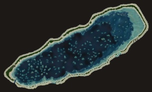
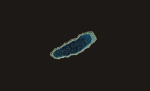
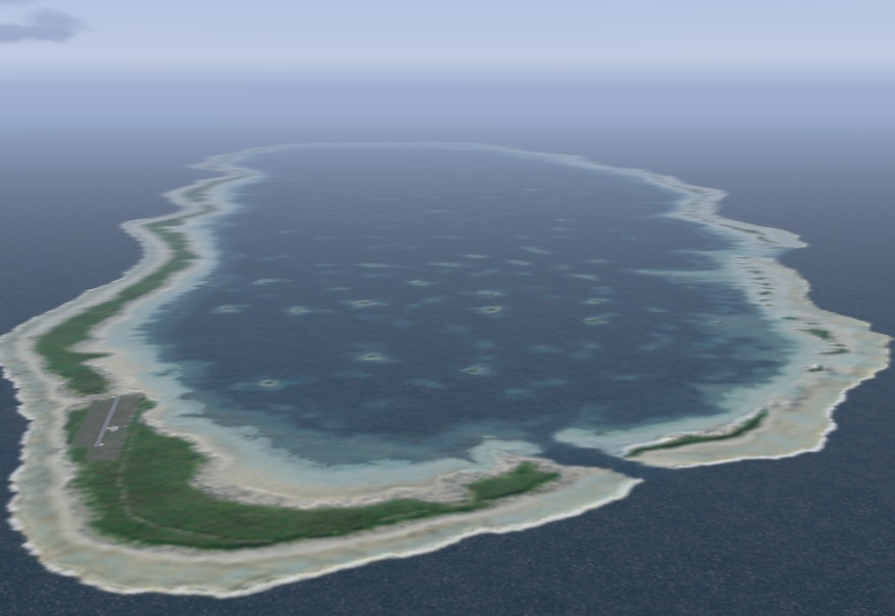

French Polynesia Tuamotu Archipelago FS9/FSX Addon Scenery
Group A
Manihi
Manihi is located in the northeast of Rangiroa. Facing northeast/southwest, Manihi forms an oval with a length of 27 km and a width of about 8 km. With clear lagoon, this island is famous worldwide for the cultivation of black pearl. The deep, navigable Tairapa pass through the coral reef is located to the extreme southwest next to the village of Paeua. The pass has a depth of 60 m except at the end, where a straight passage was dug to allow supply ships to enter the lagoon. This main village is at the entrance to the pass and is 2.8 km from the airport. The circumference of the atoll is dense with coconut palm trees. Manihi is an beautiful atoll that is suitable to calling the necklace island.


Size of Manihi relative to Rangiroa

Size of Manihi relative to Rangiroa
The Manihi airfield and the Tairapa pass

The Manihi airfield and the Tairapa pass